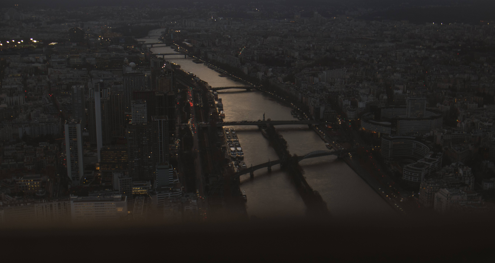

Photo Title
Photo description
Cloud Solutions Architect & DevSecOps Engineer | MSc Student @ USP
Specialized in multi-cloud architecture (AWS, GCP, Azure, OCI), DevSecOps automation pipelines, High-Performance Computing (HPC), and FinOps cost optimization. AWS User Group Leader passionate about photography & Vice City dusk vibes.
DevSecOps Architect & Researcher
5x AWS Certified & GCP DevOps Professional certified, validating expertise across multi-cloud infrastructure & operations.
Based in São Paulo, Brazil, I work as a Senior Cloud Solutions Architect at Compass UOL and am pursuing my Master's Degree (MSc) in Computer Science and Computational Mathematics at the prestigious University of São Paulo (USP - ICMC).
My academic research evaluates performance portability in High-Performance Computing (HPC) using modern C++ abstractions like Kokkos and RAJA on NVIDIA GPU architectures (Ada Lovelace). In the corporate landscape, I design complex multi-cloud solutions (AWS, GCP, Azure, OCI) with automated DevSecOps pipelines and FinOps cost reduction practices.
MSc Stricto Sensu - Computer Science & Computational Math
Focus: High Performance Computing (HPC), Supercomputing & GPU Performance Portability.
Bachelor's Degree in Information Systems
Dissertation: Performance Portability Evaluation in HPC comparing Kokkos and RAJA on GPUs.
Architecture for hybrid edge and multi-cloud infrastructure across AWS, GCP, Azure, OCI, and AWS Outposts (Rack).
Automated pipelines with integrated SAST/DAST security tooling. Prevented over 150 critical security flaws in production.
Evaluation of performance portability across supercomputing environments using C++, Kokkos, RAJA, and NVIDIA GPU architectures.
Cloud spending optimization resulting in up to 25% cost reduction. Advanced observability setup with Grafana, Prometheus, and CloudWatch.
Senior Cloud Solutions Architect & DevSecOps Engineer
Cloud Architect & DevOps Engineer (Ministry of Education Project)
DevOps Intern & Support Trainee
Specialized training in AWS Cloud Computing, Containerization (Docker, Swarm, Kubernetes), CI/CD pipelines, and multi-cloud observability monitoring.
Personally selected by AWS to attend AWS re:Invent 2025 in Las Vegas, recognizing technical contributions to cloud engineering and community leadership.
Honored with a Certificate of Excellence by Rosatom (Russian State Atomic Energy Corporation) at Obninsk Tech for technical presentation.
Recognized as Scientific Initiation Researcher (Iniciação Científica) for contributions to High-Performance Computing and GPU parallel programming.
Type 'help', 'certs', 'skills', 'skyline', 'tux', or 'sunset' below.
Capturing vibrant dusk hues, synthwave aesthetic landscapes, and global cloud journeys.
